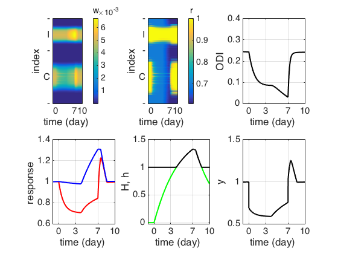

This is a Matlab code, which was used to generate Figure 5 of the
following paper.
Toyoizumi T, Kaneko M, Stryker MP, Miller KD (2014)
Modeling the dynamic interaction of hebbian and homeostatic plasticity.
Neuron 84:497-510
This code was contributed by Toyoizumi.
Usage:
Type twofm() on the matlab prompt and after a short while this image
similar to figure 5 in the paper is generated:

20150215 Note from the modeldb administrator: if you have a mu
function defined in your toolboxes it will interfere with running
twofm() by generating and error like:
...
Error in mu (line 43)
if nargin < 1 | nargin > 4
Output argument "bnds" (and maybe others) not assigned during
call to "mu".
...
I was able to remove references to the mu function with commands like
rmpath(genpath('/Applications/MATLAB_R2015a.app/toolbox/robust'))
rmpath(genpath('/Applications/MATLAB_R2015a.app/toolbox/nnet')) and
then the twofm() function runs without errors.